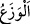

Süleyman aleyhisselâm bu sözü işitince Allah Teâlâ’ya münâcât etti “ve dedi ki: “Ey
Rabbim! Beni, gerek bana” nimet olarak verdiğin ilim, peygamberlik, hükümranlık,
adâlet, kuşların dilini anlama ve diğer nimetlere “gerekse ana-babama” babam Dâvud
b. Îşa’ya ihsan ettiğin peygamberlik, dağların ve kuşların onunla beraber tesbîh etmesi,
zırh yapmak, demirin elinde yumuşaması ve diğer nimetler ile annem İlyâin kızı
Tebşâyi’e “verdiğin nimete şükretmeye ve” şükrü tamamlamak ve nimetin devamını
taleb etmek üzere “hoşnut olacağın” Ebü’l-Leys’in ifâdesiyle: yâni benden kabul
edeceğin “iyi işler yapmaya muvaffak kıl.” der.
“__WORD__ yukarıda geçtiği gibi ayrılma ve dağılmayı önlemek, men etmek demektir. Yâni
beni, ihsan ettiğin nîmetin şükrünün dağılıp gitmesini muhâfaza eden ve şükrün benden
uzaklaşmaması için ona sarılan bir kimse kıl ki asla senin şükründen geri kalmayayım.
Süleyman (a.s.) Allah’ın kendisini şükür ordusunun dağılmasını önleyen muhâfızı
kılmasını istemiştir. Şükrün, ayrılıp giden bir topluluğa teşbîhi, istiâre-i mekniyye
(kapalı istiâre)dir. Önleme/men etme ve bağlama/sarılmadan bahsedilmesi, bu teşbîh
için bir tahyîl (zihinde canlandırma) ve karînedir.
Bir hadîste şöyle buyrulmuştur: “Nimet vahşî bir hayvana benzer; onu şükür ile
bağlayın.”[54] Çünkü şükredilince nimet yerleşir, nankörlük edilince kaçar.
Emîrü’l-mü’minîn Ali (k.v.) şöyle demiştir: “Nimetlerin ucu size ulaşınca, az
şükrederek onun tamamını kaçırmayın.” Yâni kim elinde olan nimetlere şükretmezse,
kendisinden uzak nimetlerden mahrum olur.
Sen azıcık bir nimet bulacak olsan
Belirsiz bir nokta gibi küçücük olur
O bulduğun nimete şükretmeyi ihmal etme
Yoksa eline henüz ulaşmamış nimetten mahrum olursun
İlyâin kızı Tebşâyi’, Dâvud (a.s.)’ın kendisi ile imtihan olunduğu Uriyâ’nın karısı idi.
Müslüman, temiz ve sâlih bir kadındı. Süleyman (a.s.)’a “Ey oğulcağızım, geceleyin çok
uyuma. Çünkü bu, kıyamet gününde kişiyi fakir bırakır” diyen odur. Keşfü’l-esrâr’da
böyle geçmektedir.
Süleyman (a.s.) şükrüne anne-babasını da ekledi. Çünkü onlara verilen nimet
kendisine de verilmiş sayılır ve zorunlu olarak şükrü gerektirir. Çocuğun şerefli bir
babaya neseben bağlı olması, Allah Teâlâ’nın çocuk üzerindeki bir nimetidir. Onun için
bu nimete şükredilir.
Âyetin işâretine gelince; kalb Süleyman’ı (a.s.) şöyle dedi: “Babam demek olan rûha
rabbânî feyz ihsân ederek ve annem demek olan cesedi şer’î amellerde kullanıp
çalıştırarak bana nimet verdin. İşte bu iki hususla nimet tamam olur.”
Allah’ım, bizi nimete eren ve şükredenlerden kıl.
“Rahmetinle, beni” cennete koy “iyi kulların arasına kat.” Çünkü kimse cennete
amel ile giremez, ancak Allah’ın rahmeti ve ihsânı ile girer.